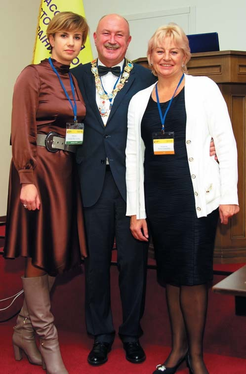
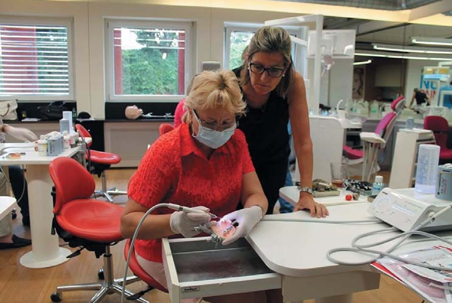
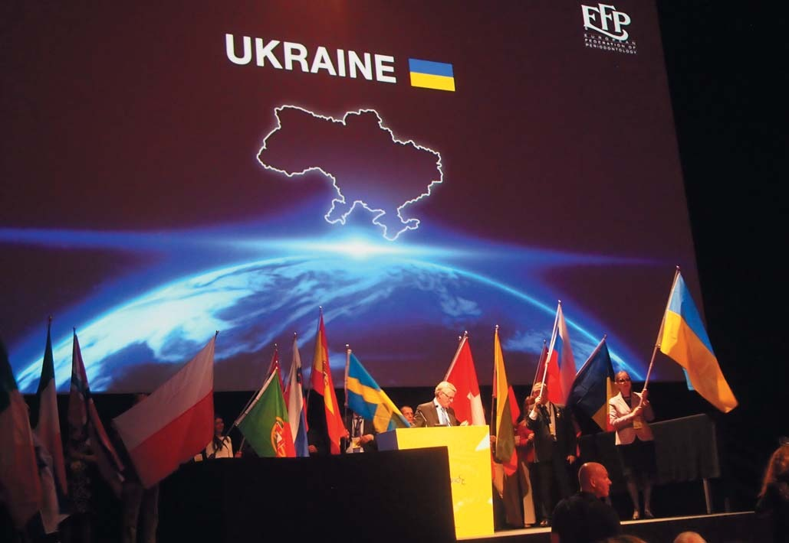
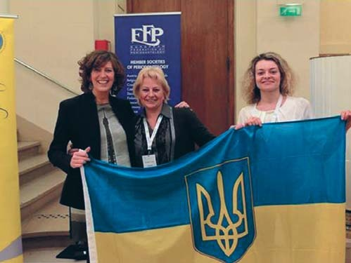
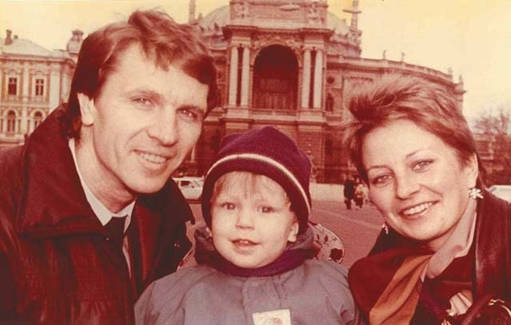
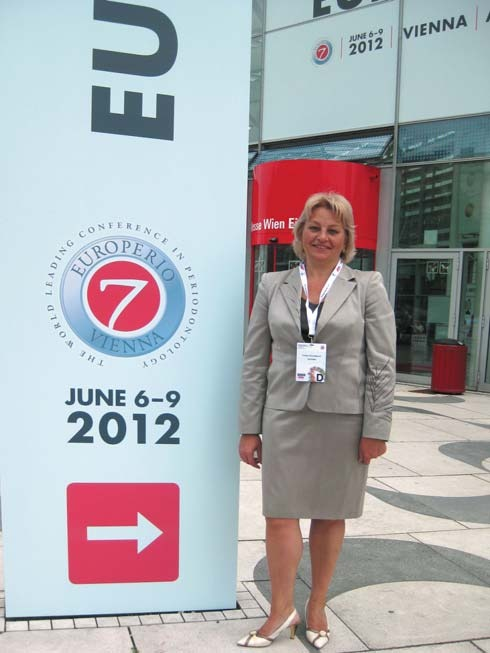
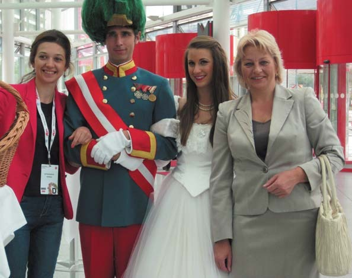
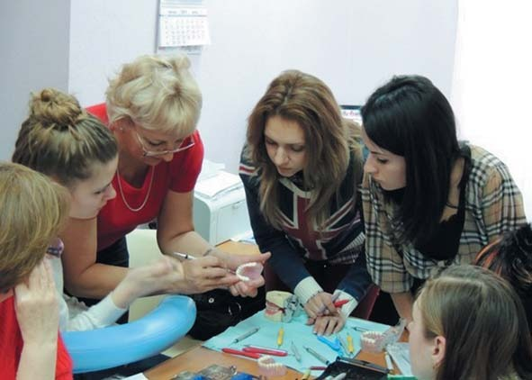
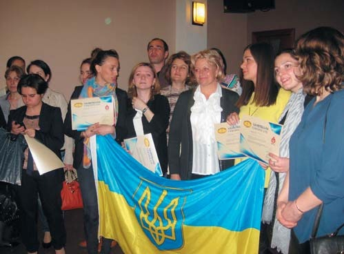

Вітальня · журнал «ДентАрт» 2015 №4
Вітальня: Юлія Чумакова
GUEST ROOM: JULIA CHUMAKOVA

У цьому номері журналу «ДентАрт» у нас у Вітальні Юлія Геннадіївна Чумакова — доктор медичних наук, професор, генеральний секретар Асоціації лікарів-пародонтологів України, чиїми зусиллями Асоціація першою з країн пострадянського простору стала асоційованим членом Європейської федерації пародонтологів (EFP).
«Зростання захворювань пародонту — глобальна медична і соціальна проблема»
— Шановна Юліє Геннадіївно, на 3-му Національному Стоматологічному Конгресі в Києві йшла дискусія про європейські протоколи лікування. Чи врятують українську пародонтологію європейські протоколи?
— Однозначно, ні. Я, як і всі мої колеги, розумію, що протоколи важливі і потрібні. Але які протоколи? Для «галочки» чи все ж як керівництво до дії лікареві-пародонтологові? Але ж у нас немає поки що спеціальності «пародонтологія», тому офіційно немає і лікарів-пародонтологів. Хто сьогодні надає допомогу пацієнтам із захворюваннями пародонту? Та практично всі: терапевти-стоматологи, хірурги, ортодонти, ортопеди... А хто несе відповідальність за якість надання допомоги таким хворим, за віддалені результати лікування, за ускладнення? Лікар-пародонтолог, якого немає. Тобто ніхто.
Тому проблема української пародонтології набагато глибша — в освіті, у підготовці кваліфікованих фахівців лікарів-пародонтологів, як це заведено в усьому світі, а потім уже в розробці стандартів та протоколів лікування. Я вважаю, що основні складові успіху в лікуванні пародонтологічних хворих сьогодні — це: перше — рівень компетентності лікаря, котрий як ніде в іншій стоматологічній спеціальності повинен мати достатні загальномедичні знання, клінічний досвід і здатність переконати пацієнта, змусити його повірити в результат лікування; друге — можливість впроваджувати нові технології, особливо ті, що стосуються регенеративної пародонтології, і третє — відповідне оснащення клініки.
— В Україні, як і в інших пострадянських країнах, поширеність захворювань пародонту зростає, в той час як у розвинутих країнах їх рівень падає. Вважається, що досить навчити людей правильному догляду за порожниною рота, і проблема зникне сама собою. Тих, кого ми не навчили правильно чистити зуби, доведеться лікувати. Але в майбутньому — є шанс через навички правильного догляду позбутися більшої частини захворювань? Яка роль стоматологів у розвитку пародонтальних проблем пацієнтів, чи немає у Вас відчуття, що ятрогенна роль стоматолога у розвитку пародонтологічних захворювань недооцінена?
— Дозволю не погодитися з Вами і зазначити, що зростання поширеності захворювань пародонту має місце в усіх країнах. Це глобальна медична і соціальна проблема. І, звичайно, не лише рівень гігієни порожнини рота впливає на показники захворюваності. Це і безліч інших факторів, серед яких важко виділити головні: екологія, спосіб життя, харчування, куріння, стреси, генетична схильність, ну і системна патологія. Про яке стоматологічне здоров'я дітей сьогодні можна говорити, якщо у нас практично немає здорових матерів? Проблема захворювань пародонту починається з дитинства — недорозвинення зубощелепної системи, дефекти у розвитку сполучної і кісткової тканини, а потім мілке переддвер'я, аномалії прикріплення вуздечок, скупченість зубів, рецесії ясен і т.д.

VI (XIII) з'їзд Асоціації стоматологів України, Одеса, жовтень 2014 р. Обраний президент АСУ Мирон Угрин, президент Асоціації лазерної стоматології України Адріана Бариляк і генеральний секретар Асоціації лікарів-пародонтологів України Юлія Чумакова.
В останні роки зусилля провідних міжнародних пародонтологічних організацій AAP (Американської академії пародонтології) і EFP (Європейської федерації пародонтологів) були спрямовані на доказ взаємозумовленості і взаємообтяжуваності пародонтиту та різних системних захворювань (серцево-судинна патологія, цукровий діабет, ревматоїдний артрит, захворювання нирок, онкопатологія та ін.). Після Конгресу EuroPerio8 у Лондоні в червні 2015 року президія EFP подала в Європейський Парламент у Брюсселі Маніфест з проханням до всіх країн Євросоюзу виділити додаткові кошти на профілактику та лікування захворювань пародонту з метою знизити загальносоматичну захворюваність населення.

Навчання в Swiss Dental Academy, Швейцарія, Ньон, червень 2015 р.
Що ж до ятрогенних факторів і ролі стоматолога, вони, на жаль, мають місце. І ми сьогодні все частіше звертаємо на це увагу. Агресивний скейлінг, неправильний вибір інструменту, полірування високоабразивними порошками можуть призвести до руйнування з'єднувального епітелію. Ортодонтичне лікування (особливо розширення щелепи), накладання рабердаму і використання ретракційної нитки тривалий проміжок часу можуть викликати рецесію ясен, особливо у пацієнтів з «тонким» біотипом ясен. І так далі…
— Чи є у Вас оптимізм щодо успіху задекларованих реформ у стоматології?
— Взагалі-то, я по життю оптиміст. Але в цьому питанні не беруся щось прогнозувати. Усе дуже складно. Тут недостатньо нашого з Вами бажання і навіть бажання тисячі успішних приватнопрактикуючих стоматологів. Необхідні політична воля, політичне рішення зламати стару систему і команда зацікавлених професіоналів на всіх рівнях: в МОЗ, в облздороввідділах, на місцях. Самого ентузіазму мало. Тому я вважаю, що реформи у стоматології, безумовно, будуть, але не так швидко, як нам би цього хотілося. І багато в чому це залежатиме від стану ринку стоматологічних послуг, від конкуренції, від переосмислення взаємовідносин лікар — пацієнт у нових економічних умовах.
— Що, нарешті, робити з невідповідністю в термінах пародонт — періодонт?
— Ви знаєте, я не бачу в цьому жодних проблем. Ми говоримо «періодонтальна зв'язка», але при цьому захворювання звучать «пародонтит» і «періодонтит». В англомовній літературі це «periodontitis» і «apical periodontitis». Пишу статті, виступаю за кордоном — уживаю їхні терміни, тут — наші. От коли ми приймемо Міжнародну класифікацію захворювань пародонту, тоді й поміняємо термінологію. Але потім треба буде переписати всі підручники, методички, робочі плани. Я вважаю, що у нас зараз є проблеми важливіші.
«Асоціація лікарів-пародонтологів України стала асоційованим членом EFP»
— Ви генеральний секретар Асоціації лікарів-пародонтологів України. Що помітного останнім часом з'явилося у діяльності цього професійного об'єднання? Діяльність в Асоціації додає Вам сил чи, навпаки, відбирає і сили, і час?

Урочисте відкриття Конгресу EuroPerio8, Лондон, червень 2015 р. З прапором України — президент Асоціації лікарів-пародонтологів України, професор Галина Білоклицька.
— Найголовніше досягнення нашої Асоціації в тому, що ми першими з країн пострадянського простору стали асоціативним членом Європейської федерації пародонтологів, куди входять представники 28 країн Європи — 24 діючих члени і 4 асоціативних. Це здійснилося завдяки зусиллям Президента АЛПУ проф. Г.Ф. Білоклицької і всіх регіональних представництв. Перед нами відкрилися нові перспективи співпраці з провідними кафедрами та університетами з проблем пародонтології, можливість брати участь у всіх заходах під егідою EFP, мати доступ до друкованих органів EFP. У Лондоні на Конгресі EuroPerio8 у червні 2015 р. уперше була представлена офіційна делегація України з виносом українського прапора. Незабутнє видовище і гордість, що у нас усе вийшло! Що є команда однодумців, є професіонали, які залучають молодь, є інтерес до пародонтології як до спеціальності, а головне — є перспективи розвитку.
Моя громадська робота в Асоціації — це відповідальність і обов'язок. Відповідальність бути в курсі всього нового, що є у світовій пародонтології, читати періодичну літературу, тобто бути завжди «на рівні», а це справді заряджає і надихає. Обов'язок відвідувати всі конференції, симпозіуми, конгреси в Україні та за кордоном, доносити інформацію, виступати, читати лекції — це, звичайно, вимагає затрат і матеріальних, і фізичних (більше емоційних), але мені приємні спілкування з колегами, нові зустрічі, нові знайомства, нові авторитети.

EFP 1st Master Clinic, Париж, лютий 2014 р. Ліворуч — президент EFP Мішель Ренерс (Бельгія), праворуч — прес-секретар Асоціації лікарів-пародонтологів України Юлія Браун.
«У школі всі були в шоці ...»
— Як Ви стали стоматологом?
— Випадково. У нашій родині ніколи не було медиків. Мої батьки — інженери-будівельники. Я серйозно займалася спортом (майстер спорту з художньої гімнастики) і кожні півроку обов'язково проходила профогляд у фізкультурному облдиспансері. І з дитинства не любила стоматологів. Не тому, що боялася лікуватися, — у мене були здорові зуби, а страшенно мені не подобався специфічний запах у кабінеті — запах гвоздичної олії або евгенолу.
У школі я любила математику, навчалася у фізико-математичному класі, на уроках праці займалася радіоелектронікою, грала з хлопцями в шахи. У старших класах вигравала всі олімпіади з математики, фізики та хімії. Учителі пророкували мені майбутнє видатного математика ...
І тут моя старша сестра між журналістикою і медициною (тоді це було модно) вибрала медицину і вступила до медичного інституту на лікувальний факультет. Ми жили в одній кімнаті, і на мені сестра вивчала анатомію, пальпацію, перкусію і т.п. А настільною книгою став «Атлас анатомії людини» Синельникова. Стали приходити в гості друзі — студенти-медики, і мені з ними було дуже цікаво і весело. А в 16 років я познайомилася зі своїм майбутнім чоловіком — теж студентом-медиком, закохалася, і все вирішилося само собою. Сестра — хірург, чоловік — терапевт, а я — стоматолог. У школі всі були в шоці, але я вступила на стоматфакультет. І 19-річною вийшла заміж, і стала стоматологом.

З чоловіком Олексієм і сином Дмитриком, 1992 р.
«Мене дуже хвилюють питання аутоімунних реакцій у хворих на пародонтит»
— Науковий пошук часто йде по спіралі, і буває важко говорити про початки і кінці. Але якщо мати на увазі якісь завершені фрагменти, що Вам вдалося завершити в науці? І над чим працюєте нині?
— Ви знаєте, я щаслива з того, що у мене завжди були чудові наставники — мої вчителі. І в школі, і в інституті, і в НДІ стоматології. Вони навчили мене пізнавати, мислити, аналізувати, своїм особистим прикладом показали весь процес наукових досліджень — від експерименту до теорії та практики. Я ніколи не займалася наукою заради науки, я завжди робила тільки те, що мені було цікаво, завжди намагалася реалізувати свої думки, ідеї. Іноді були помилки і розчарування, хоча в науці негативний результат — це теж результат. Але це була справжня наука (віварій, лабораторії, бібліотека, посиденьки в науковій дискусії) і справжня наукова атмосфера в інституті, коли все кидали і бігли на Вчену раду послухати, про що сперечаються видатні вчені — проф. Воскресенський О.М., проф. Сукманський О.І., проф. Левицький А.П., проф. Барабаш Р.Д., проф. Семенченко Г.І. та ін. Знаєте, в той час молодим ученим було соромно не ходити в бібліотеку, не читати, не писати, бо там з ранку до вечора сиділи професори і працювали. Вони заражали нас своєю відданістю науці, творчості, пізнанню. Я 11 років працювала над кандидатською дисертацією і 11 років — над докторською. Мені все здавалося, мало матеріалу, треба ще групу хворих набрати, ще один експеримент провести...
Завершити щось у справжній науці неможливо, тому що чим більше отримуєш відповідей, тим більше виникає нових запитань. Займалася мікробіологією, плавно перейшла в імунологію. Довелося навіть курси закінчити з клінічної імунології та попрацювати в імунологічній лабораторії, щоб розібратися. Нині мене дуже хвилюють питання, пов'язані з механізмом розвитку аутоімунних реакцій у хворих на пародонтит, оскільки дуже виросла поширеність десквамативного гінгівіту. Ну а головний, перспективний напрямок, яким я планую і далі займатися, — це розробка, експериментально-клінічне обґрунтування та впровадження методів тканинної біоінженерії і клітинної терапії у пародонтології. Це отримання нових скаффолдів, культивування і диференціювання стовбурових клітин, конструювання тканинноінженерних комплексів і, як результат, повна регенерація пародонтальних структур.
— Ви відвідуєте багато зарубіжних конгресів, виставок у різних країнах. Які з освітніх програм Ви вважаєте необхідними для розширення світогляду стоматологів? Які з цих семінарів та конгресів стали для Вас поворотними в кар'єрі? Де Ви бували неодноразово?
— Скажу коротко. Мої пріоритети: 1) конгреси EuroPerio під егідою EFP (EuroPerio7 — Відень, 2012; EuroPerio8 — Лондон, 2015; EuroPerio9 — Амстердам, 2018); 2) EFP master clinic — Париж, 2014; 3) International Osteology Symposium фундації Osteology Foundation — Монако, 2013, 2016; 4) Квінтесенція пародонтології та імплантології — Москва, 2014, 2015; 5) виставка IDS — Кельн, 2013, 2015.
Зрозуміло, що ці поїздки і участь у конгресах коштують досить дорого, і вони розраховані на аудиторію з певним рівнем підготовки. Я неодноразово слухала багатьох лекторів, адже я повинна розуміти стратегію розвитку пародонтології — що нового? Які нові методики? І навіть якщо я почую для себе одну нову пропозицію, одну нову фразу, висновок, то день прожитий не дарма. Народжуються нові ідеї для творчості, для наукового пізнання.
Що ж до молодих лікарів-початківців, я б порадила їм починати з наших українських курсів, вивчити ази пародонтології, а потім купувати спеціальну літературу (сьогодні є прекрасні книги, перекладні видання у видавництвах «ГалДент» та «Абетка») і читати, читати, читати... І тільки потім їздити, слухати й аналізувати.


У день відкриття Конгресу EuroPerio7, Відень, червень 2012 р. Перша ліворуч — учениця професора Чумакової, а нині президент Грузинської асоціації пародонтологів Лалі Кочіашвілі.
«Було б бажання, голова і руки, а робота завжди знайдеться»
— Ви говорили, що зареєструвалися як приватний підприємець. Що Вас до цього підштовхнуло? І якою бачиться Вам Ваша клініка?
— Я довго виношувала цю ідею, і, як Ви розумієте, це було дуже важке рішення для мене. 29 років в Інституті стоматології, у бюджетній науковій організації, кращі роки життя, становлення як лікаря, вченого, педагога... Але все змінилося. У країні політична та економічна криза. Медицина, стоматологія, стоматологічна наука перетворилися зі сфери надання медичної допомоги на ринок з продажу послуг. І мені стало сумно і нудно. Фінансування немає, кращі наукові співробітники йдуть на пенсію, реактивів немає, лабораторії скорочуються, а молоді перспективні співробітники вже не думають про науку, а змушені здавати план, будемо так його називати. Я втомилася боротися, апелювати до справедливості, втомилася приходити на роботу о 8.10 ранку і відсиджувати години, відвідувати не завжди потрібні наради, збори, ради, писати вимоги на апаратуру, яку ніколи не куплять, складати перспективні плани, які ніхто не виконає. Мені стало тісно в цій системі, і я вирішила спробувати започаткувати свою справу. У мене є сили, бажання, слава Богу, здоров'я і маса нереалізованих наукових планів та ідей. А головне, мене підтримує моя сім'я, мої близькі, колеги-однодумці.

Практичний семінар з пародонтології Освітнього Центру «PEARLSTOM», Одеса, листопад 2013 р. Навчання ручному скейлінгу.
Я не буду зараз розкривати всіх своїх планів, але моя мрія — приватний навчально-освітній центр «Академія пародонтології», де можна буде з гідністю навчати лікарів, вести наукові дослідження і лікувати наших пародонтологічних пацієнтів. Сьогодні з'явилася можливість кооперуватися з різними вченими, в тому числі і закордонними, в робочі дослідницькі групи на договірних засадах, укладати договори з провідними лабораторіями та науковими центрами, стажуватися за кордоном. Було б бажання, голова і руки, а робота завжди знайдеться.
— Людство входило у ХХI століття з надією на те, що воно буде гуманнішим, світлішим, ніж жорстоке ХХ. Надії не виправдалися. Жорстокості, реваншизму, самолюбства, ненависті не стало менше. Ми постійно живемо в тривогах і стресах. Як Ви знімаєте стрес? Хто або що допомагає?
— Я по життю спортсменка. Умію боротися, концентруватися і долати будь-які негаразди. Мені ніколи впадати в депресію, бо я знаю, що потрібна моїй родині, моїм дорогим і улюбленим пацієнтам, моїм учням. Якщо не я, то хто? Якщо не ми, то хто зробить цей світ кращим?

Виїзний семінар з пародонтології для грузинських лікарів, Тбілісі, травень 2014 р.
— Ваше побажання читачам ДентАрту — а це стоматологи із 13 країн Європи та Азії.
— Найголовніше для людини — бути в гармонії із самим собою. Робити те — що подобається, жити з тим — кого любиш, планувати те — що можеш здійснити. Я бажаю всім миру, натхнення і любові!
Розмовляла Ксенія Лазарєва. Світлини з архіву Юлії Чумакової.